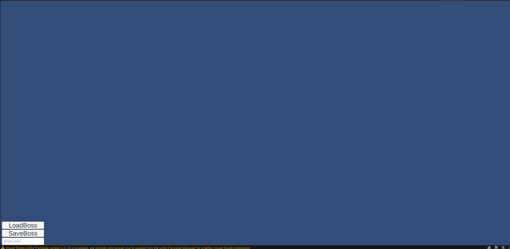
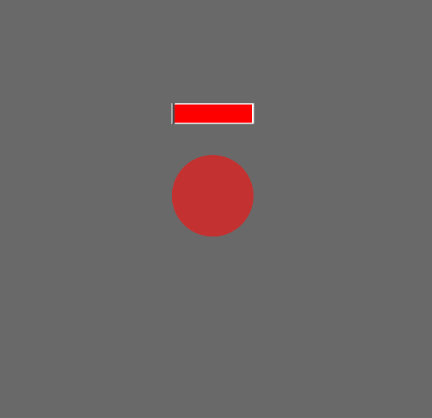
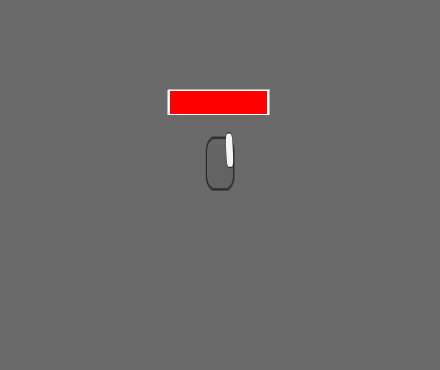

Graduation work
Task
The main goal of my graduation work was to choose a topic I am interested in, research this topic, choose something to create in line with the topic, and write down all my findings in a research paper.
Topic and initial research
The topic I chose was: Procedural level generation using graph grammar. The first thing I did was look up and read papers about graph grammar. I wanted to learn what graph grammars are, how to use them, and what they have been used. After reading a number of papers the most interesting one was about generating robots optimized for moving over different terrain types. This paper gave me the idea to generate game enemies more specifically boss enemies.
Results
Graph Grammar
I used graph grammar to generate a graph that represents the abilities of the boss and the parts the boss is built out off. I created a way to visually represent this graph and the generation process. All the graph grammar rules are stored in a JSON file and can be created using an editor. Once a boss graph is generated it can be saved and loaded from and to a JSON file.
Boss Battle
After creating a graph that represents the boss I had to convert it to an actual creature with a body and a behaviour to be able to target and kill a player but also be able to take damage and go into different phases. The body is represented with circular sprites a boss can consist of main and secondary parts. The main part of each boss has abilities that it throws at the player and controls the main movement for it and any connected secondary parts when defeated the secondary parts that are still alive continue fighting but without the main core will have none to very limited movement. The secondary parts have abilities to attack the players and can have movement but this will be limited by the core piece that they are attached to. Each part also has phases with multiple possible conditions when going to a new phase a part unlocks new abilities. After a boss gets generated from the graph it can be edited and saved to a JSON file. You can also use saved graphs to generate a boss this randomizes its phase conditions, abilities, movement systems, and health. A player character is available to test and fight these generated bosses.
 Conclusion
Writing my first ever research paper was a very fun experience that thought me a lot like: what steps to take to start learning about a new topic, the value of reading other people’s work, being able to use it to create my own unique project, and learning how to write a paper myself. The topic I learned about for this paper was also very interesting as it aligned with my interests. I like learning about procedural generation and AI-related topics this project had a bit of both.
Download the full paper Github